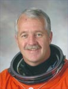

Lyndon B. Johnson Space Center
Houston, Texas 77058
|
National Aeronautics and Space Administration Lyndon B. Johnson Space Center Houston, Texas 77058 |
 |
Biographical Data |
||
John L. Phillips (Ph.D.)
NASA Astronaut (FORMER)
PERSONAL DATA: Born April 15, 1951, in Fort Belvoir, Virginia. Married to the former Laura Jean Doell; they have one son and one daughter. Enjoys skiing, swimming, kayaking and hiking. Phillips retired from NASA in 2011 and now lives in Idaho.
EDUCATION: Graduated from Scottsdale High School, Arizona, in 1966; received a B.S. degree in mathematics from the U.S. Naval Academy in 1972; an M.S. in aeronautical systems from the University of West Florida in 1974; and an M.S. and Ph.D. in geophysics and space physics from UCLA in 1984 and 1987, respectively.
SPECIAL HONORS: National Merit Scholar; graduated second of 906 at USNA; awarded the NASA Space Flight Medal, NASA Distinguished Service Medal, the Gagarin Medal, the Russian Medal of Merit for Space Exploration, the Los Alamos National Laboratory Distinguished Performance Award and various military awards.
EXPERIENCE: Phillips received a U.S. Navy commission in 1972 and was designated a Naval Aviator in November 1974. He flew the A-7 Corsair Aircraft and made overseas deployments with Attack Squadron 155 aboard the USS Oriskany and USS Roosevelt. Subsequent tours of duty included Navy recruiting and flying the CT-39 Sabreliner aircraft. Phillips has logged more than 4,500 flight hours and 250 carrier landings. He served as a Navy reservist from 1982 to 2002 as an A-7 pilot and in various nonflying assignments. He retired in 2002 with the rank of Captain, USNR.
After leaving the Navy in 1982, Phillips enrolled as a graduate student at UCLA. While there, he carried out research involving observations by the Pioneer Venus Spacecraft. Upon completing his doctorate in 1987, he was awarded an Oppenheimer Fellowship at Los Alamos National Laboratory (LANL) in New Mexico. He worked at LANL for 9 years, performing research on the sun and the space environment. From 1993 to 1996, he was the Principal Investigator for the Solar Wind Plasma Experiment aboard the Ulysses Spacecraft as it executed a unique trajectory over the poles of the sun. He has authored 156 scientific papers dealing with the plasma environments of the sun, Earth, other planets, comets and spacecraft.
NASA EXPERIENCE: Phillips was selected by NASA and began astronaut candidate training in 1996. He has held various jobs in the Astronaut Office, including systems engineering and CAPCOM for the International Space Station (ISS) and as a robotics specialist, supporting operations on missions. Phillips has logged more than 203 days in space during three flights and has flown as Flight Engineer on three different spacecraft types: shuttle, Soyuz and ISS. Phillips was detailed to the U.S. Naval Postgraduate School in Monterey, CA, from 2009 to 2011 as the Smith/McCool NASA Chair Professor.
SPACEFLIGHT EXPERIENCE: STS-100 Endeavour (April 19 to May 1, 2001). During the 12-day, 187 orbit mission, the crew successfully delivered and installed the Canadarm-2 robotic arm. They also delivered experiments and supplies aboard the Multi‑Purpose Logistics Module, “Raffaello”on its maiden flight. Phillips was the Ascent/Entry Flight Engineer and was the Intravehicular Activity Coordinator during two spacewalks.
ISS Expedition 11 (April 15 to October 10, 2005). Phillips launched from the Baikonur Cosmodrome in Kazakhstan aboard Soyuz TMA-6 and served as NASA Science Officer and Flight Engineer aboard ISS. During their 6-month stay aboard ISS, the crew continued ISS maintenance, worked with scientific experiments, performed a spacewalk in Russian spacesuits from the Pirs Airlock and hosted the “return to flight” visit of Space Shuttle Discovery (STS-114). The ISS-11 crew landed in Kazakhstan on October 10, 2005. In completing his second mission, Phillips logged 179 days and 23 minutes in space, including an EVA totaling 4 hours and 58 minutes.
STS-119 Discovery (March 15 to 28, 2009). During the 13-day, 202 orbit mission, the crew delivered and installed the S6 integrated truss segment to the ISS, including the final two solar array wings. Phillips operated the Canadarm-2 robotic arm to unberth and install the S6 truss. He also served as Loadmaster, Rendezvous Mission Specialist and Crew Medical Officer.
AUGUST 2011